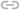

Василий Ночь
@hi_bitch 11 октябряКогда вы полагаете, что именно ваш самолет разобьется, или что именно ваш проект все назовут идиотским, или что именно вас все высмеют и растопчут, вы по сути говорите себе: «Я — исключение из правила, я не такой, как все остальные; я уникальный и особенный». Это чистой воды нарциссизм. Вы полагаете, что именно ваши проблемы заслуживают особого обращения, что именно ваши проблемы уникальны и не подчиняются законам физической вселенной.
-

- 10
-
 32
32
- 